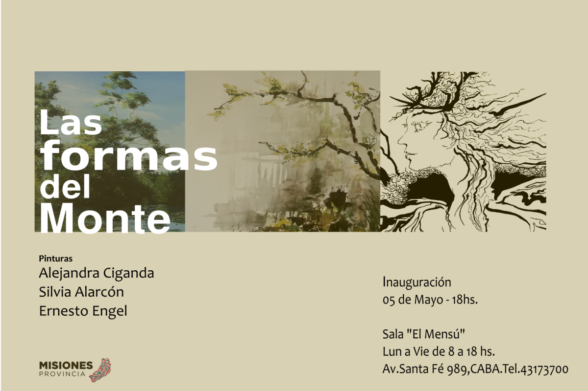
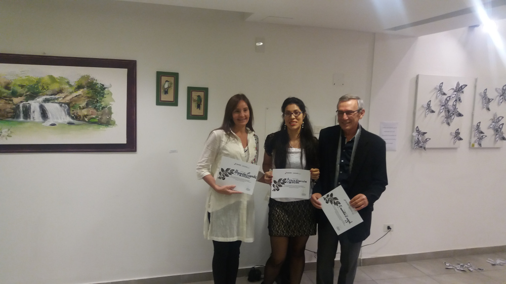
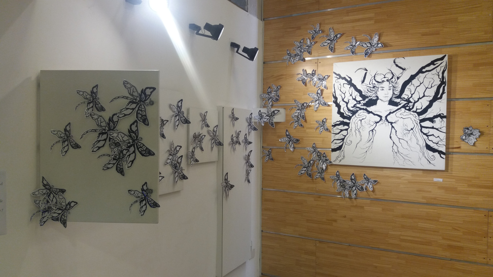
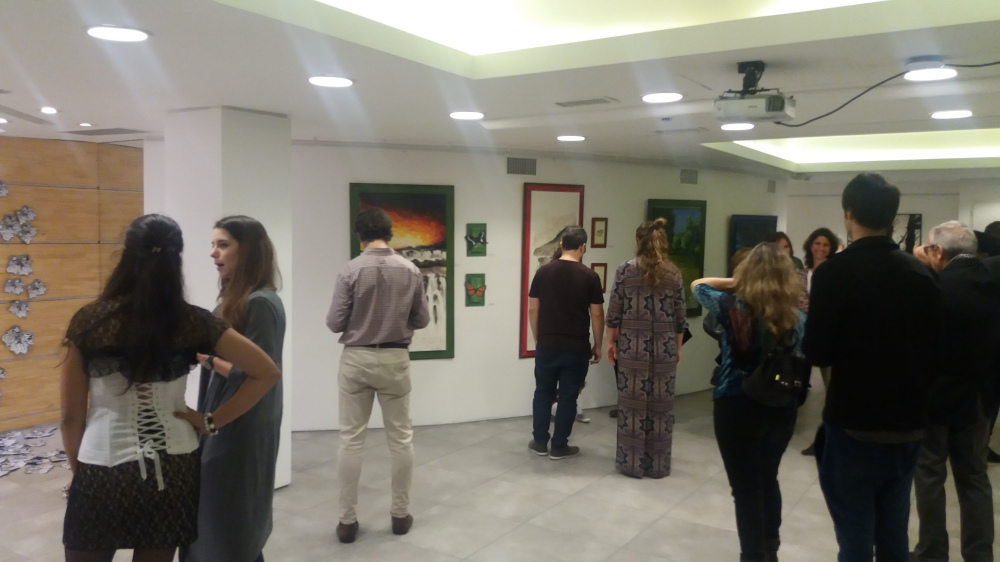

“Las Formas del Monte” Ernesto Engel – Alejandra Ciganda – Silvia Alarcón (9 MAYO 2017)
¡Es tan fácil, tan fácil perder la noción de la hora dentro del monte, y sentarse un rato en el suelo mientras se descansa inmóvil…! Horacio Quiroga
Un artista y su contexto se oponen, se sumergen, se acompañan, pero jamás se separan, y menos si el paisaje es el intermediario entre ellos. Javier Maderuelo dice que el paisaje no es lo que está delante sino lo que se ve, cada mirada, cada subjetividad nos da la información para entender y analizar un paisaje. Y en este caso nos acercaremos una vez más a este tan recurrente tópico que es nuestro contexto,Misiones es paisaje. A través de la representación pictórica Engel, Ciganda y Alarcón nos traen visiones de un monte, de un tiempo, de una forma de ver y ser.
Lic. Valeria Anzuate
Como resultado de la convocatoria realizada en 2016 nos encontramos con la primera muestra conjunta de los artistas posadeños: Engel, Ciganda y Alarcón.



